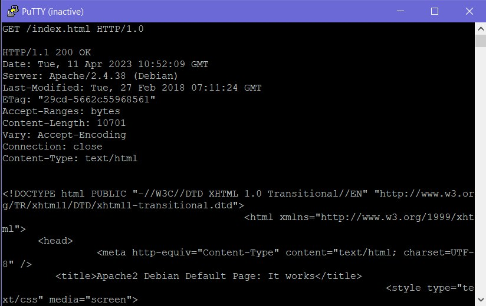
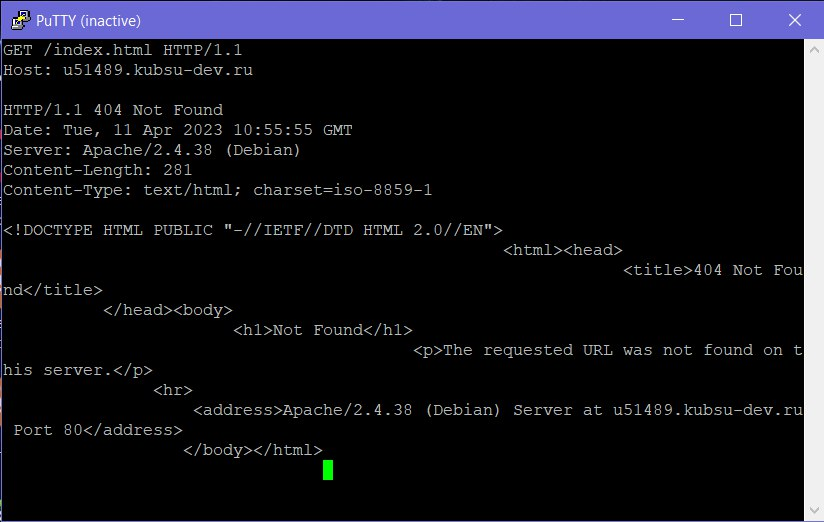
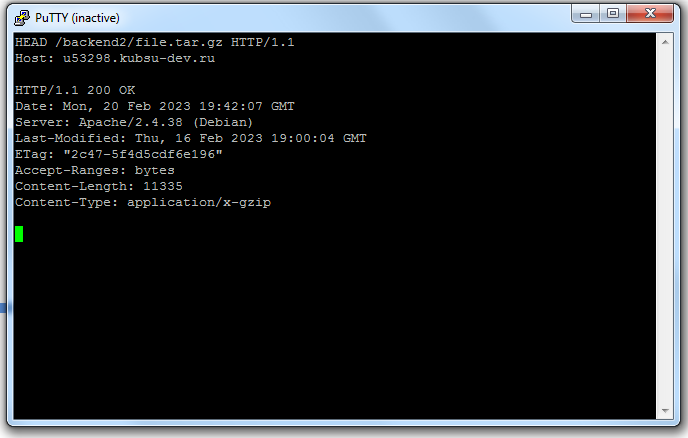
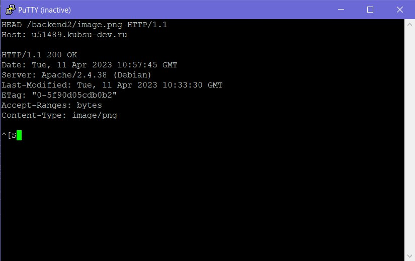
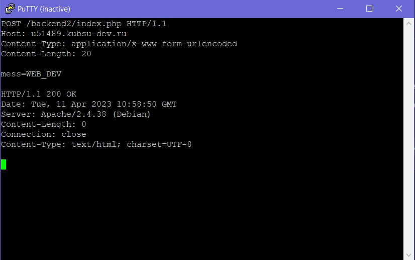
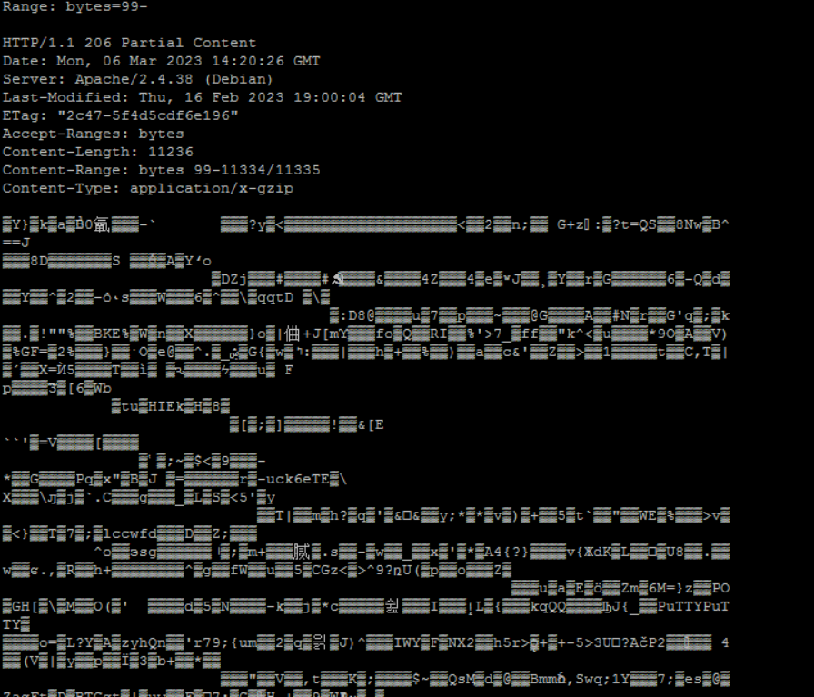
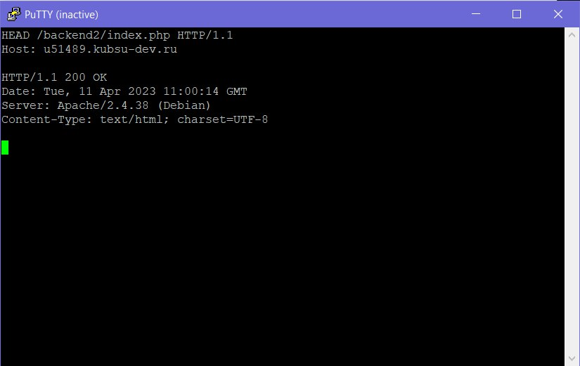

-
получить главную страницу методом GET в протоколе HTTP 1.0;

-
получить внутреннюю страницу методом GET в протоколе HTTP 1.1;

-
определить размер файла file.tar.gz, не скачивая его;

-
определить медиатип ресурса /image.png;

-
) отправить комментарий на сервер по адресу /index.php;

-
получить первые 100 байт файла /file.tar.gz;

-
определить кодировку ресурса /index.php.
